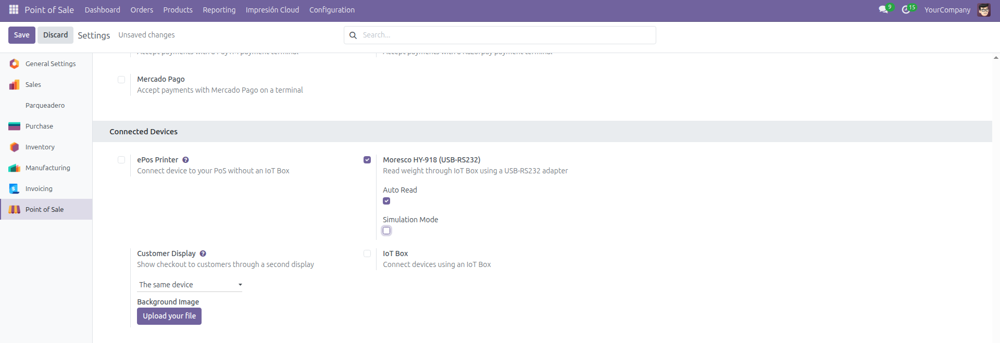
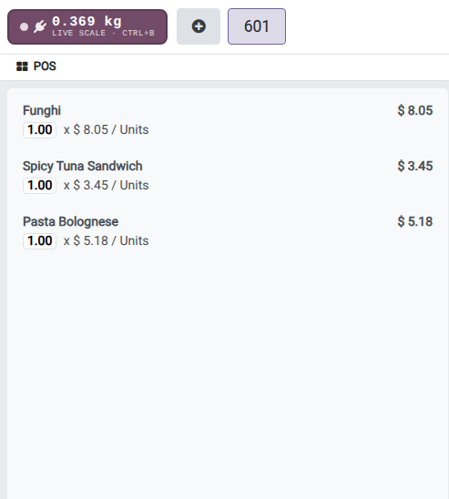

PoS Moresco Direct Connect
Conecta tu báscula Moresco HY-918 al Punto de Venta y opera 100% con el teclado

Este módulo conecta la báscula Moresco HY-918 directamente a Odoo Punto de Venta para leer el peso de forma automática en los productos pesables. La conexión se realiza directamente desde el navegador mediante la API JavaScript Web Serial, accediendo al puerto serie (adaptador USB-RS232) sin IoT Box ni software intermedio. Además, incorpora una navegación completa por teclado que permite operar todo el flujo de venta — desde la búsqueda del producto hasta el cobro y la siguiente orden — sin tocar el mouse. Compatible con Odoo 18 Community Edition.
Lee el peso de la báscula Moresco HY-918 (9600 baudios, 8N1) y lo aplica automáticamente a los productos marcados como "Para pesar".
La báscula se conecta directamente desde el navegador con la API JavaScript Web Serial, sobre un adaptador USB-RS232. Sin IoT Box, sin drivers y sin servidores intermedios.
Opera el Punto de Venta sin mouse: flechas para navegar productos, Enter para seleccionar, Tab para la siguiente búsqueda y F12 para ir al pago.
Reconecta la báscula automáticamente tras recargar la página, con monitoreo persistente de la conexión y recuperación ante fallos cada 15 segundos.
Flujo de pago completo con teclado: flechas para elegir el método de pago y Enter para seleccionar o validar la orden.
Prueba el flujo de pesaje sin báscula física, con peso fijo o aleatorio configurable. Ideal para capacitación y demostraciones.
Gracias a la Web Serial API, el Punto de Venta accede al puerto serie de la báscula directamente desde Google Chrome o Microsoft Edge, los navegadores que permiten la comunicación con puertos serie. El peso se muestra en vivo en la barra superior del POS, con un indicador que cambia de estado según la conexión.

Desde Punto de Venta → Configuración → Dispositivos conectados activas la báscula Moresco HY-918 (USB-RS232) y defines sus parámetros: lectura automática del peso, velocidad (baud rate), bits de datos, bits de parada y paridad.

Activa la lectura automática para que el peso se aplique solo al seleccionar un producto pesable, o habilita el modo simulación para realizar pruebas.


Configura un peso fijo o un rango aleatorio (mínimo y máximo) para probar el flujo completo sin necesidad de una báscula conectada.
Durante la venta, el peso de la báscula se refleja en vivo en la barra superior y se aplica automáticamente a la cantidad del producto pesable seleccionado.

Escribe para buscar · Enter: agregar primer producto · ↑/↓: navegar · Tab: siguiente búsqueda · Supr/Retroceso: eliminar último producto · F12: ir al pago · F2/Esc: enfocar buscador.
↑/↓: navegar entre métodos de pago · Enter: seleccionar método o validar la orden cuando está pagada.
Enter: nueva orden · Ctrl+B: conectar/reconectar báscula (rara vez necesario, reconecta sola) · lectura automática de peso.
Báscula Moresco HY-918 conectada mediante un adaptador USB-RS232, y un navegador compatible con la Web Serial API — Google Chrome o Microsoft Edge (versión 89 o superior). Marca los productos como "Para pesar" en la ficha de producto para activar la lectura automática de peso. No requiere IoT Box ni servidores adicionales, por lo que funciona también con Odoo alojado en la nube.
Soluciones profesionales para tu negocio.